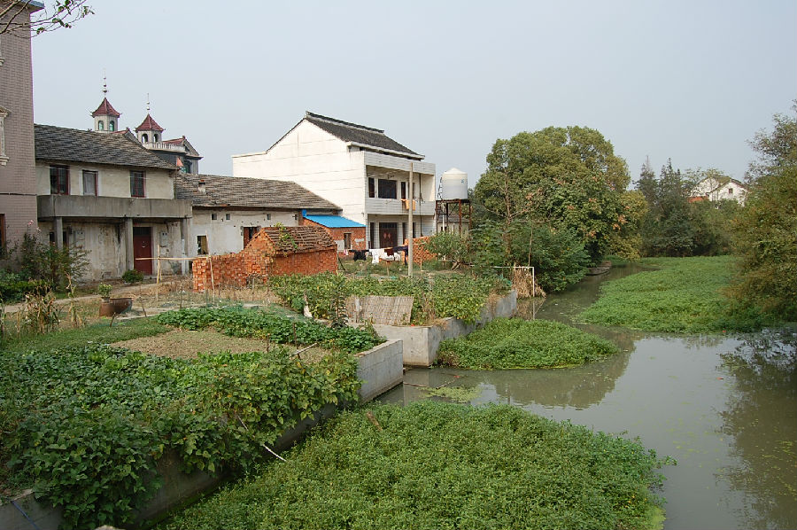
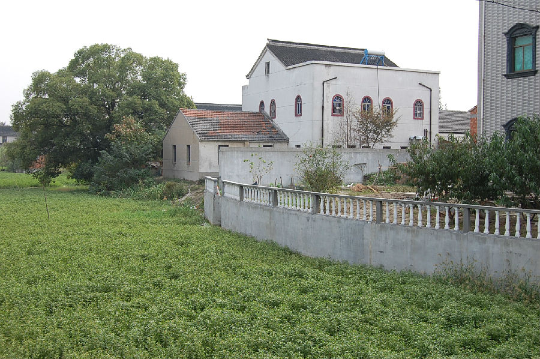

嘉兴市文物保护网 · 市级文物保护点 · 2020-11-02 · 原文


高家汇遗址位于嘉兴市秀洲区新塍镇西文桥村，原王安庄村，遗址东面临河，开挖河道，把遗址隔成南北两部分，面积约有40000平方米。根据调查资料记载，开挖河道时此处发现大量陶片，经专家鉴定，判断为新石器时代良渚文化至春秋战国时期的遗址。现遗址上建造大面积房屋，地上未采集到陶片。高家汇遗址范围较大，延续时间长，有较高的历史和科学价值。1992年公布为嘉兴市文物保护点。